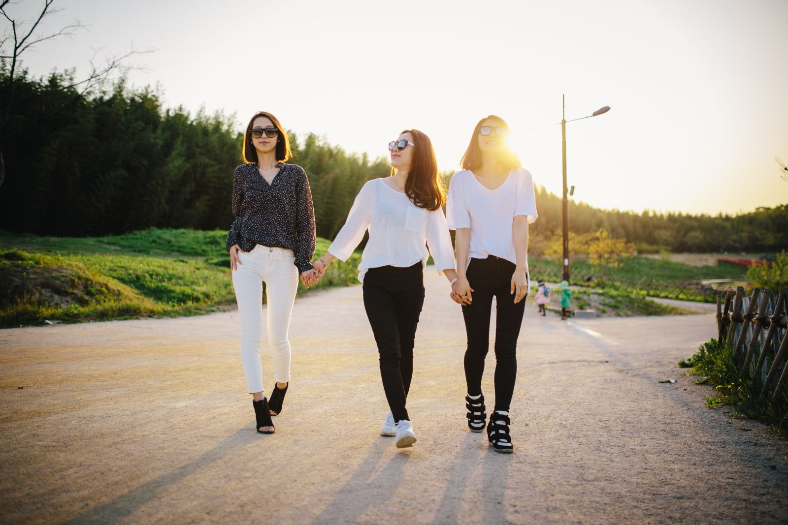
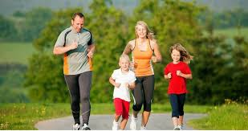
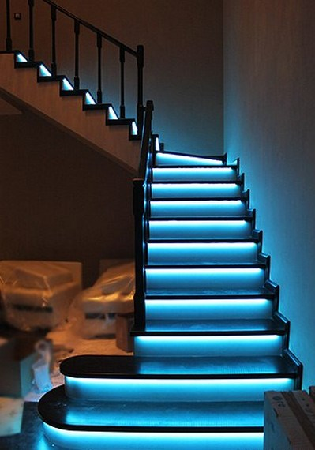
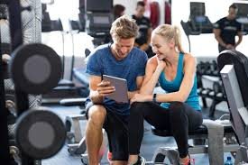

Способи вирішення гіподинамії
-
Регулярні прогулянки
Прогулянки на свіжому повітрі допомагають підтримувати фізичну активність і
покращують загальнесамопочуття. - Заняття спортом
Регулярні фізичні вправи, такі як біг, плавання, йога, тренування у фітнес-залі,
допомагаютьпідтримувати тіло в тонусі. - Активні перерви
Використовуйте перерви на роботі для невеликих фізичних вправ або розтягувань, щоб зменшити
негативні наслідки сидячого способу життя. - Домашні активності
Виконуйте домашню роботу, танцюйте під улюблену музику, грайте з дітьми — будь-яка активність
допоможе підвищити рівень фізичної активності. - Використання сходів
Замість ліфта використовуйте сходи, це чудовий спосіб підвищити фізичну активність у
повсякденному житті. - Планування тренувань
Створіть план тренувань і дотримуйтесь його,
це допоможе зробити фізичну активність звичкою.



